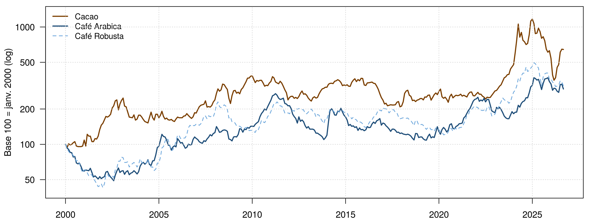
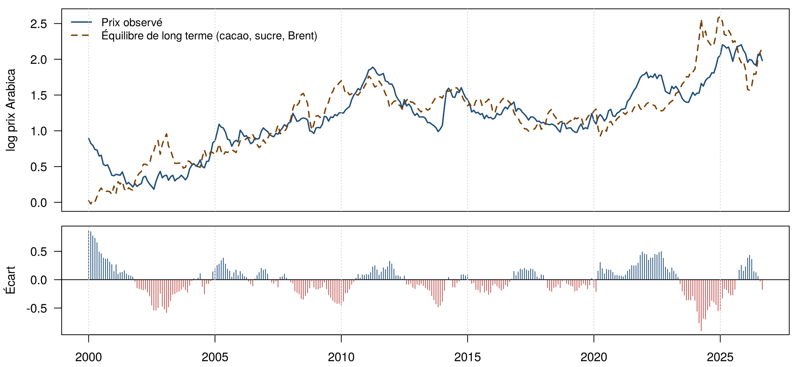
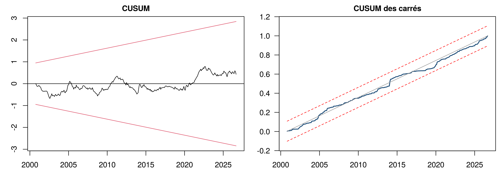
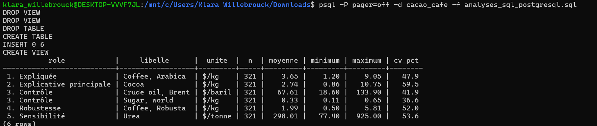
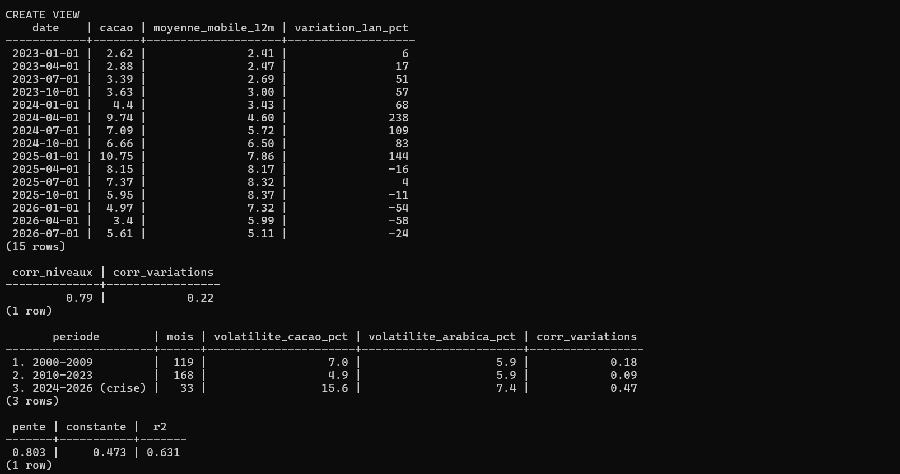

Les prix mondiaux du cacao et du café évoluent-ils ensemble sur la durée ? Nous répondons à cette question avec 26 ans de données mensuelles de la Banque mondiale, un modèle ARDL et le test des bornes de Pesaran, Shin et Smith (2001). Toute l'analyse est faite sous R ; les données sont aussi rangées dans une base PostgreSQL.
Oui, mais dans un seul sens. Le prix du café Arabica suit, à long terme, un équilibre fixé par le prix du cacao (avec le sucre et le pétrole en contrôles). L'inverse n'est pas vrai : le cacao ne s'ajuste pas au café. Nous avons donc inversé notre spécification de départ, où le cacao était la variable expliquée.
Une seule source pour toutes les séries : le Pink Sheet de la Banque mondiale (fichier CMO-Historical-Data-Monthly.xlsx), en dollars courants, de janvier 2000 à septembre 2026, soit 321 mois sans valeur manquante. Toutes les séries sont passées en logarithme, ce qui permet de lire les coefficients comme des élasticités.
| Série | Rôle dans le modèle | Unité | Moyenne | Min. | Max. |
|---|---|---|---|---|---|
| Café Arabica | Expliquée | $/kg | 3,65 | 1,20 | 9,05 |
| Cacao | Explicative principale | $/kg | 2,74 | 0,86 | 10,75 |
| Sucre | Contrôle | $/kg | 0,33 | 0,11 | 0,65 |
| Pétrole Brent | Contrôle | $/baril | 67,61 | 18,60 | 133,90 |
| Café Robusta | Robustesse | $/kg | 1,99 | 0,50 | 5,81 |
| Urée (engrais) | Sensibilité | $/tonne | 298,01 | 77,40 | 925,00 |

Le travail est découpé en six scripts R, un par étape, qui suivent le plan du mémoire. Chaque bouton ouvre le script correspondant plus bas, dans la visionneuse de code.
Import du fichier Excel de la Banque mondiale, sélection des six séries, passage en logarithme, statistiques descriptives et export en CSV (pour R et pour PostgreSQL).
Tests ADF et KPSS, aux hypothèses nulles opposées, en niveau et en différence, complétés par Phillips-Perron et Zivot-Andrews (rupture structurelle).
Nous avons d'abord pris le cacao comme variable expliquée, puis testé les deux sens avec le test des bornes.
Analyse combinatoire des contrôles (2³ = 8 modèles), sélection des retards avec auto_ardl (AIC contre BIC), puis test des bornes, cas 3 (et cas 2 en contrôle).
Multiplicateurs de long terme, modèle à correction d'erreur (ECM), diagnostics avec les fonctions check_* du package performance, VIF, RESET, ARCH, CUSUM.
Huit variantes autour du modèle principal (Robusta à la place de l'Arabica, sans Brent, avec urée, cacao seul, indicatrice de crise, trois sous-périodes), causalité de Granger par la méthode de Toda-Yamamoto, exogénéité faible.
La relation de long terme estimée donne, pour chaque mois, le prix « d'équilibre » du café compte tenu du cacao, du sucre et du pétrole. L'écart entre le prix observé et cet équilibre se referme progressivement, ce que mesure le terme de correction d'erreur.


En plus du fichier Excel, nous avons rangé les données dans une base PostgreSQL, créée et interrogée en ligne de commande (psql) dans un terminal Linux (Ubuntu sous WSL). Nous sommes ensuite allés plus loin que la simple vérification, en calculant des statistiques directement en SQL.
donnees_sql.csvprix : clé primaire sur la date, contraintes CHECK\copy : 321 lignesCORR, REGRLa corrélation calculée en SQL (0,79 entre les log-prix, 0,22 entre les variations mensuelles) est identique à celle de R : les deux outils travaillent sur les mêmes données. Par période, la volatilité du cacao a triplé pendant la crise, et les deux marchés ne bougent vraiment ensemble à court terme que lors de grands chocs.
| Période | Volatilité cacao | Volatilité Arabica | Corrélation |
|---|---|---|---|
| 2000-2009 | 7,0 % | 5,9 % | 0,18 |
| 2010-2023 | 4,9 % | 5,9 % | 0,09 |
| 2024-2026 | 15,6 % | 7,4 % | 0,47 |

variables, vue et statistiques par série.
Tous les scripts, lisibles directement ici. Le script complet projet_cacao_cafe.R reprend l'ensemble de l'analyse en un seul fichier (c'est celui de l'annexe F du mémoire) ; les scripts d'étapes détaillent chaque partie.
Chargement…Télécharger le dépôt (bouton vert Code → Download ZIP sur GitHub), ouvrir RStudio dans le dossier R/, puis :
install.packages(c("readxl", "DBI", "RPostgreSQL",
"tseries", "urca", "ARDL", "performance",
"lmtest", "car", "strucchange", "vars"))
source("projet_cacao_cafe.R")
Dans un terminal Linux, depuis le dossier SQL/ :
$ createdb cacao_cafe $ psql -d cacao_cafe -f base_cacao_cafe_postgresql.sql $ psql -P pager=off -d cacao_cafe \ -f analyses_sql_postgresql.sql